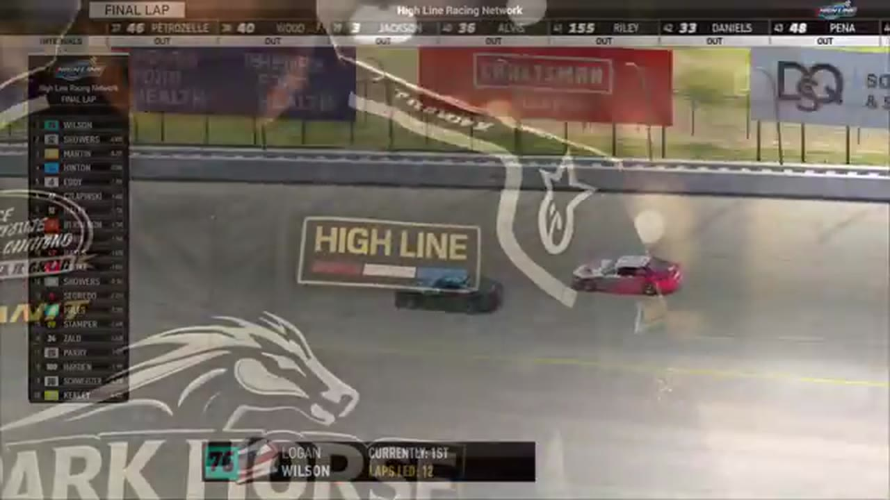

Randy Showers
Team assignment not stated in the structured owner record.
1 RECOVERED WIN / EVERY ONE RECEIPTED
- Official files
- 18
- Central editions
- 5
- Exact tape cues
- 25
- Accepted podiums
- 3
Randy Showers's accepted HLRN result file contains 1 supported feature win and 3 recovered podiums: S2 R4 at EchoPark Speedway (P3); S1 R7 at Michigan (P1); S1 R4 at iRacing Superspeedway (P3). A consistently stated team affiliation remains open for owner review. The currently indexed source window runs from November 24, 2025 through July 20, 2026.
The searchable official-broadcast footprint covers 18 race files, with the heaviest repeated track signal at Daytona. 5 Highline Central editions and 25 primary-race jump points connect the result ledger back to the tape. The densest direct-tape categories are incident (5 cues) and interview (4 cues). Those counts describe where the name is easiest to find; they are not fault, pace, or performance grades. A source-attributed car frame is published with its original video and timestamp. That is the current discovery map for Randy Showers.
No unsupported start total, full points total, car number, or finishing position is added around those receipts. The dossier grows from accepted results and source appearances, not from broadcast-name volume. Separately, 8 Highline Live files sit on the bonus shelf and never enter the official season ledger. The displayed name is labeled transcript normalized; that status remains visible so an owner roster can strengthen or correct the identity without rewriting the evidence trail. Those boundaries define Randy Showers's public HLRN file.
10 featured race-tape cues
These are discovery routes into complete HLRN broadcasts, not performance grades or inferred results.
- S1 / R7 · RESULT
Randy Showers is confirmed atop the Michigan results
The primary Michigan results readout records Randy Showers first, Craig Martin second, and Brandon Hinton third.
Michigan - S1 / R4 · RESULT
Juan Escamilla is confirmed atop the iRacing Superspeedway results
The iRacing Superspeedway broadcast's closing readout records Juan Escamilla first, Trevor Haley second, and Randy Showers third.
iRacing Superspeedway - S2 / R4 · FINISH
Craig Rowe reaches the EchoPark Speedway checkered
S2 / R4 at 3:22:51: The primary tape calls Craig Rowe at the EchoPark Speedway checkered and carries the first replay of the finish. The result label is tied to the accepted ledger.
EchoPark Speedway - S1 / R4 · FINISH
Juan Escamilla's high lane overtakes Trevor Haley at the stripe
Trevor Haley takes the white flag in front, but Juan Escamilla advances on the high side in the final run. The booth then receives the Escamilla winner indication and begins its photo-finish review.
iRacing Superspeedway - S1 / R8 · BATTLE
Trevor Haley and Michael Wiley carry the Talladega lead battle
S1 / R8 at 1:36:22: The Talladega pack compresses in a front-pack fight while Trevor Haley, Michael Wiley, and Randy Showers are named on the call. The chapter keeps the live battle intact and makes no finishing-order claim.
Talladega - S2 / R4 · INTERVIEW
Randy Showers explains the race from the booth
S2 / R4 at 3:25:43: Randy Showers joins the HLRN booth for a first-person race account. The interview is preserved as context and does not create a placement claim outside the accepted result ledger.
EchoPark Speedway - S1 / R8 · INTERVIEW
Randy Showers joins the booth before the restart
S1 / R8 at 1:58:07: Randy Showers joins the HLRN booth for a first-person race account. The interview is preserved as context and does not create a placement claim outside the accepted result ledger.
Talladega - S1 / R7 · INTERVIEW
Randy Showers tells the winner's side
S1 / R7 at 2:05:17: Randy Showers, Craig Martin, and Brandon Hinton join the HLRN booth for a first-person race account. The interview is preserved as context and does not create a placement claim outside the accepted result ledger.
Michigan - S1 / R7 · INTERVIEW
Randy Showers explains the fuel margin behind his Michigan win
Randy Showers joins the booth after Logan Wilson runs out of fuel and explains that he reached the last lap with roughly half a lap of margin. Trevor Haley is invited into the same post-race conversation.
Michigan - S1 / R9 · RESTART
Trevor Haley and Eli Zallo bring Chicagoland back to green
S1 / R9 at 1:39:23: Trevor Haley, Eli Zallo, and Randy Showers are in the booth's front-pack call as Chicagoland returns to green. The cut keeps the restart launch and the first lap of lane development together.
Chicagoland
Recent editions connected to Randy Showers
Rowe Wins the Memorial in the Wreckage
Vincent Guerrero took the stage, Craig Rowe took the last-lap lead, and the David Boyer Memorial ended after 18 reported cautions.
S1 / R12Brown Survives Daytona
A final-lap wreck removed the front group and opened the lane for Matt Brown, Ryan Wilson, and Ricky Miles.
S1 / R9Escamilla Closes Chicagoland
Brandon Showers and Juan Escamilla divided the stages before the points leader took command of the final run.
S1 / R7Randy Steals Michigan Late
Trevor Haley and Cory Cook split the stages, but Randy Showers timed the closing run and passed Logan Wilson for his first Highline win.
S1 / R4Escamilla Takes the Superspeedway
James Smith and an uncertain second-stage scorer set the table before Juan Escamilla displaced teammate Trevor Haley in the final run.
Verified team history is not consistently stated. Complete starts, finishes, and points remain open beyond the recovered results. Name normalization remains reviewable against owner records.